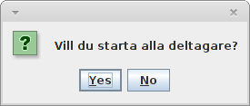

Registreringsprogrammet används för att registrera deltagares start- och måltider. Tiderna lagras i separata filer (starttider.txt respektive maltider.txt) i hemkatalogen för senare bearbetning.
Starta programmet
Dubbelklicka på programfilen (EnduroRegister.jar). Ett fönster visas som låter användaren välja programläge.
Välja programläge
När programmet startas så öppnas ett fönster med tre alternativ. Välj det alternativ som ska användas. Vid registrering av start- och måltider ändras programmets gränssnitt för att visa ett fönster där startnummer kan matas in. För att byta läge; starta om programmet.

Masstart
Alternativet masstart ber användaren bekräfta starten. När man klickar på "Ja" börjar tiden räknas. Därefter registreras aktuell tid för alla deltagare i en fil och programmet stängs ner. Information om deltagarnanam lagras i filen namnfil.txt i hemkatalogen. En fil med deltagare måste finnas och heta namnfil.txt och ligga i hemkatalogen. Detta eftersom startnumren läses därifrån.
Gränssnittets utseende och layout
Gränssnittet består av ett fält för att mata in ett startnummer och en knapp för att registrera tiden. Underst i fönstret visas ett statusfält med information om de senast sparade tiderna.

Deltagare 1 har registrerats med tid 14:00:32. Deltagare 2 håller på att registreras.
Registrera tid
Fyll i förarens startnummer i fältet och tryck på "registrera", även enter-tangenten kan användas. Det ser likadant ut oavsett läge. Den registrerade tiden syns i det nedre fältet.
Spara tider
Tiderna sparas kontinuerligt under programmets användning och behöver inte sparas manuellt.
Avsluta programmet
För att avsluta programmet behöver man bara stänga ner fönstret.